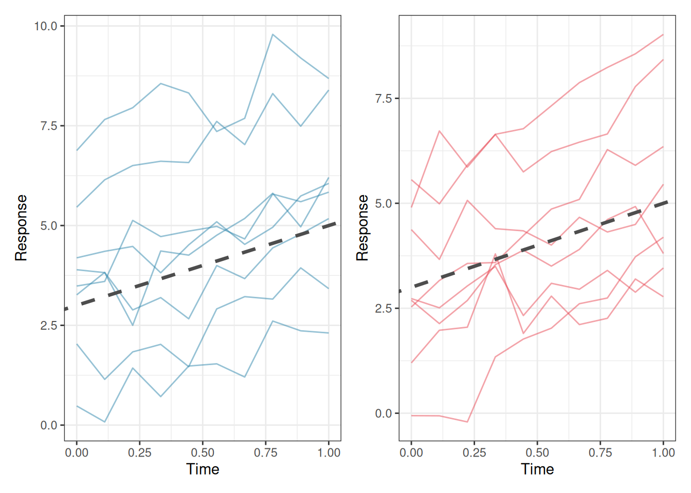
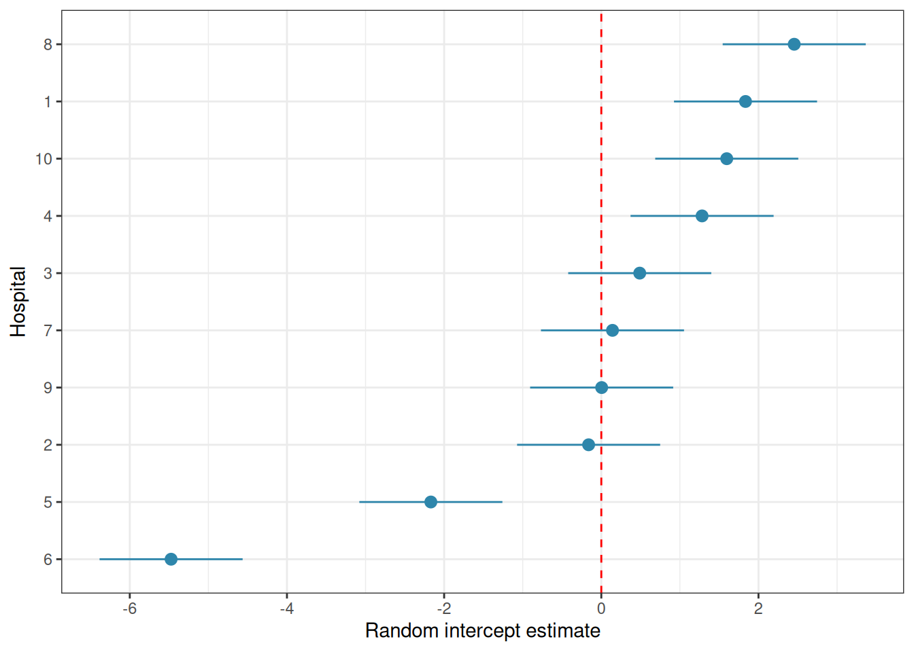
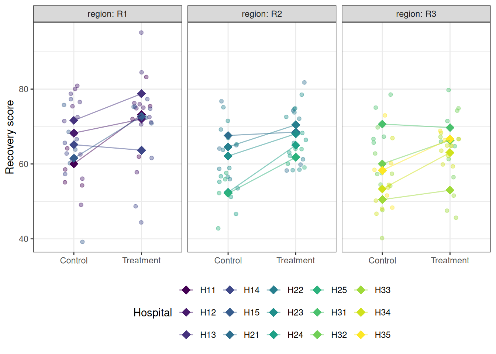
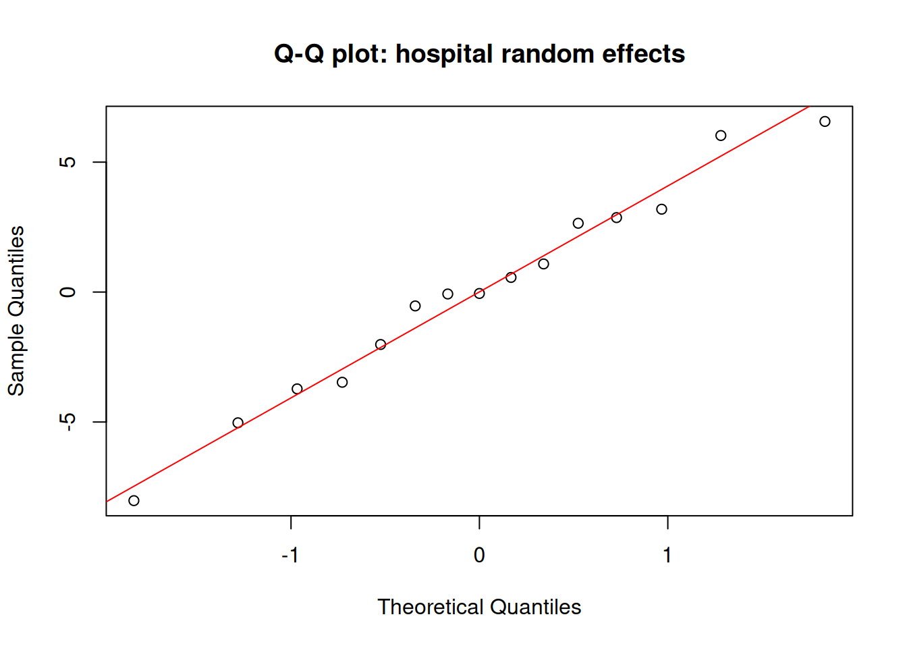

The repeated measures and split-plot designs of Chapters sec-chap6 and sec-chap7 introduced the idea that not all sources of variation in biological data are equal. Some variation is systematic and of direct scientific interest like the effect of a treatment, a drug, a genotype. Some variation is structural and must be accounted for but is not itself the focus like the fact that patients differ from one another, that plots within the same field are more similar than plots in different fields, that repeated measurements on the same individual are correlated.
Classical ANOVA handles these structural sources of variation through explicit error terms like the Error() specification in aov(). This works well for simple, balanced designs with one or two levels of nesting. It becomes unwieldy, and eventually impossible, when the hierarchical structure is more complex, when data are missing, when the design is unbalanced, or when you want to make inferences that generalise beyond the specific levels of a grouping factor that happen to appear in your data.
Mixed-effects models are the modern solution to all of these problems. They extend the linear model framework by including both fixed effects, the systematic, estimable treatment effects that classical ANOVA tests, and random effects, the structural variation attributable to grouping factors whose levels are a random sample from a larger population. The result is a framework that is simultaneously more flexible, more honest about the structure of biological data, and more directly connected to the scientific questions being asked.
9.1 When Random Effects Are Necessary
9.1.1 The Three Situations That Demand Random Effects
Random effects are not merely a statistical convenience, they are the correct model for specific, recognisable data structures. Three situations arise repeatedly in biological research where failing to include random effects leads directly to incorrect inference.
Situation 1: Clustered observations. Measurements taken on units that belong to the same higher-level group will be more similar to each other than measurements from different groups, regardless of any treatment. Patients recruited from the same hospital share clinical practices, patient population, and staffing. Plants in the same greenhouse bench share light and temperature. Students in the same classroom share a teacher. This within-cluster similarity, quantified by the intraclass correlation coefficient introduced in Section 2.6, means the observations are not independent, and the effective sample size is smaller than the raw count of observations suggests. A random effect for the cluster absorbs this similarity and produces correct standard errors.
Situation 2: Repeated measurements. When the same individual is measured multiple times at different time points, under different conditions, or in different locations, the repeated measurements on the same individual are correlated. Chapter sec-chap6 handled this with repeated measures ANOVA. Mixed models handle it more flexibly: the individual is modelled as a random effect, and the covariance structure of the repeated measurements can be specified explicitly. Mixed models also handle missing data gracefully, which repeated measures ANOVA cannot.
Situation 3: Generalising beyond the observed levels. If the levels of a grouping factor in your study are a random sample from a larger population like hospitals drawn from a healthcare system, farms drawn from a region or batches drawn from a production run and you want your conclusions to generalise to that larger population, the grouping factor must be treated as random. A fixed effect estimates the mean of each specific level observed; a random effect estimates the distribution of levels in the population.
9.1.2 Recognising Random Effects in Practice
The practical question is: for each grouping factor in your data, are the levels the specific entities of interest, or a sample representing a broader population?
Factor
Fixed or random?
Reason
Fertiliser type (control, N, P)
Fixed
Specific treatments of interest
Hospital (12 of 200 in region)
Random
Sample from a population
Patient (20 recruited volunteers)
Random
Sample from a population
Genotype (4 specific varieties)
Fixed
Specific varieties of interest
Field (6 randomly selected)
Random
Sample from a population
Time point (weeks 0, 4, 8, 12)
Fixed
Specific times of interest
When in doubt, ask: would you want your conclusions to apply to levels of this factor that were not in your study? If yes, the factor is random.
9.2 Random Intercepts and Random Slopes
9.2.1 The Random Intercept Model
The simplest mixed model adds a random intercept for each level of a grouping factor. For a study with patients nested within hospitals, the random intercept model is:
where \(y_{ij}\) is the response for patient \(i\) in hospital \(j\), \(x_{ij}\) is a predictor (treatment, time, covariate), \(b_j\) is the random intercept for hospital \(j\), and \(\varepsilon_{ij}\) is the residual. The random intercepts are assumed normally distributed:
\[b_j \sim \mathcal{N}(0, \sigma^2_b)\]
The random intercept \(b_j\) captures the fact that some hospitals have systematically higher or lower outcomes than average, for reasons unrelated to the treatment being studied. By modelling this explicitly, the fixed effect \(\beta_1\) is estimated after accounting for hospital-level differences which is a more honest and more precise estimate than one that ignores the clustering.
9.2.2 The Random Slope Model
A random intercept allows each group to have a different baseline level of the response. A random slope allows each group to have a different relationship between a predictor and the response:
where \(b_{0j}\) is the random intercept for group \(j\) and \(b_{1j}\) is the random slope i.e. the deviation of group \(j\)’s slope from the average slope \(\beta_1\). Together they form a bivariate normal distribution:
The covariance \(\sigma_{01}\) captures whether groups that start higher also tend to change more (or less) rapidly, an estimate that is a biologically important quantity in longitudinal studies.
9.2.3 Visualising Random Intercepts and Slopes
library(ggplot2)library(patchwork)set.seed(42)n_groups<-8n_obs<-10x<-seq(0, 1, length.out =n_obs)# Random intercept modelri_data<-do.call(rbind, lapply(seq_len(n_groups), function(g){b0<-rnorm(1, 0, 2)data.frame( x =x, y =3+b0+2*x+rnorm(n_obs, 0, 0.5), group =factor(g))}))# Random slope modelrs_data<-do.call(rbind, lapply(seq_len(n_groups), function(g){b0<-rnorm(1, 0, 2)b1<-rnorm(1, 0, 1.5)data.frame( x =x, y =3+b0+(2+b1)*x+rnorm(n_obs, 0, 0.5), group =factor(g))}))p1<-ggplot(ri_data, aes(x =x, y =y, group =group))+geom_line(colour ="#2E86AB", alpha =0.5)+geom_abline(intercept =3, slope =2, linetype ="dashed", colour ="grey30", linewidth =1.2)+labs(x ="Time", y ="Response")+theme_bw()p2<-ggplot(rs_data, aes(x =x, y =y, group =group))+geom_line(colour ="#E84855", alpha =0.5)+geom_abline(intercept =3, slope =2, linetype ="dashed", colour ="grey30", linewidth =1.2)+labs(x ="Time", y ="Response")+theme_bw()p1+p2

Figure 9.1: Left: a random intercept model, all groups share the same slope but have different intercepts. The dashed line is the population-level (fixed effect) trajectory; solid lines are group-specific trajectories. Right: a random slope model, groups differ in both their starting level and their rate of change. The variation in slopes is itself a scientifically meaningful quantity.
9.2.4 Choosing Between Random Intercepts and Random Slopes
The choice between a random intercept model and a random slope model is not merely statistical but it reflects a scientific question. A random intercept model asks: do groups differ in their average response level? A random slope model asks additionally: do groups differ in how the response changes with the predictor?
In a clinical trial measuring recovery over time, a random intercept captures the fact that some patients start sicker than others. A random slope captures the additional possibility that some patients improve faster than others which is a clinically important question about treatment response heterogeneity.
Include a random slope when you have scientific reason to believe that the relationship between the predictor and the response genuinely varies across groups, and you got enough data to estimate the additional variance component reliably.
As a practical guide, at least 5-6 groups are needed to estimate a random intercept variance reliably, and at least 10-15 groups for a random intercept plus slope model. With fewer groups, the variance estimates will be unstable and the model may fail to converge.
9.3lme4 and nlme: A Practical Guide
9.3.1 Two Packages, Different Strengths
Two R packages dominate mixed-effects modelling in biology: lme4(Bates et al. 2015) and nlme(Pinheiro and Bates 2000). They fit the same broad class of models but differ in their syntax, capabilities, and defaults.
lme4 is the modern standard for most applications. It is fast, handles crossed and nested random effects naturally, and uses a clean formula syntax. Its main limitation is that it does not directly provide p-values for fixed effects which is a deliberate design decision by its authors that reflects genuine statistical controversy (see Section 9.4).
nlme is older but offers features that lme4 does not: direct specification of residual covariance structures (useful for repeated measures with heterogeneous variances) and nonlinear mixed models. Its syntax is more verbose and it handles crossed random effects less elegantly than lme4.
For most applications in this book, lme4 is the right choice.
9.3.2 The lme4 Formula Syntax
lme4 extends R’s standard model formula with a notation for random effects: (random_effect | grouping_factor). The vertical bar | separates the random effect structure from the grouping factor.
Formula
Model
y ~ x + (1 | group)
Fixed slope for x; random intercept by group
y ~ x + (x | group)
Fixed slope for x; random intercept and slope by group
y ~ x + (1 | group) + (1 | block)
Two crossed random effects
y ~ x + (1 | region/hospital)
Hospital nested within region
y ~ x + (1 | region) + (1 | region:hospital)
Equivalent nested specification
9.3.3 Fitting and Interpreting a Random Intercept Model
set.seed(42)# Simulate a simple random intercept dataset# 20 patients per hospital, 10 hospitals, one treatment covariaten_hospitals<-10n_patients<-20hospital_sd<-3patient_sd<-2df_lme<-do.call(rbind, lapply(seq_len(n_hospitals), function(h){hospital_effect<-rnorm(1, 0, hospital_sd)data.frame( outcome =rnorm(n_patients, mean =50+hospital_effect+2*rbinom(n_patients, 1, 0.5), sd =patient_sd), treatment =factor(rep(c("Control", "Treatment"), each =n_patients/2)), hospital =factor(h))}))# Fit random intercept modelfit_ri<-lme4::lmer(outcome~treatment+(1|hospital), data =df_lme, REML =TRUE)summary(fit_ri)
#> Linear mixed model fit by REML ['lmerMod']
#> Formula: outcome ~ treatment + (1 | hospital)
#> Data: df_lme
#>
#> REML criterion at convergence: 897.6
#>
#> Scaled residuals:
#> Min 1Q Median 3Q Max
#> -2.8980 -0.6451 0.0198 0.5870 3.3917
#>
#> Random effects:
#> Groups Name Variance Std.Dev.
#> hospital (Intercept) 5.609 2.368
#> Residual 4.486 2.118
#> Number of obs: 200, groups: hospital, 10
#>
#> Fixed effects:
#> Estimate Std. Error t value
#> (Intercept) 52.8446 0.7783 67.895
#> treatmentTreatment 0.2663 0.2995 0.889
#>
#> Correlation of Fixed Effects:
#> (Intr)
#> trtmntTrtmn -0.192
The summary output has four sections worth reading carefully.
Random effects: the variance components. (Intercept) under hospital is \(\hat{\sigma}^2_b\): the estimated variance in baseline outcomes across hospitals. Residual is \(\hat{\sigma}^2_\varepsilon\): the within-hospital, within-patient variation. Their ratio tells you how much of the total variation is attributable to hospital-level differences. From the result, the intraclass correlation is therefore \(\text{ICC} = 5.61 / (5.61 + 4.49) = 0.56\), meaning that 56% of the total variation in outcomes is attributable to systematic differences between hospitals which a substantial clustering effect that would badly distort any analysis that ignored it.
Fixed effects: the coefficient table. The (Intercept) is the estimated mean outcome in the reference group (Control) at an average hospital. The treatment coefficient (here treatmentTreatment) is the estimated average difference between treatment and control, after accounting for hospital-level variation.
Correlation of fixed effects: the correlation between the intercept and treatment coefficient estimates. Large correlations (close to ±1) can indicate collinearity or model specification problems.
Number of observations and groups: always verify these match your data. Here 200 observations are nested in 10 hospitals, 20 patients per hospital, as specified. A mismatch between these numbers and your intended design is the first sign of a coding error in the grouping factor.
9.3.4 REML vs ML Estimation
lme4 offers two estimation methods, controlled by the REML argument:
REML (Restricted Maximum Likelihood) is the default (REML = TRUE)and should be used when the goal is to estimate variance components. REML produces unbiased estimates of \(\sigma^2_b\) and \(\sigma^2_\varepsilon\), analogous to dividing by \(n-1\) rather than \(n\) when estimating a variance.
ML (Maximum Likelihood) should be used (REML = FALSE) when comparing models with different fixed effect structures using likelihood ratio tests. REML likelihoods are not comparable across models with different fixed effects because they are computed on different effective datasets.
The practical workflow is therefore always two steps: use REML = FALSE to compare models and identify which fixed effects belong in the model, then refit the winning model with REML = TRUE to obtain the final, unbiased variance component estimates for reporting.
# Step 1: fit both models with ML = FALSE to enable# a valid likelihood ratio test comparing their fixed effects.# REML = FALSE is mandatory here. Comparing REML likelihoods# across models with different fixed effects is not valid.fit_ri_ml<-lme4::lmer(outcome~treatment+(1|hospital), data =df_lme, REML =FALSE)fit_null_ml<-lme4::lmer(outcome~1+(1|hospital), data =df_lme, REML =FALSE)# Likelihood ratio test: does adding treatment improve the fit?# The chi-squared statistic is -2 * (logLik(null) - logLik(full))# with degrees of freedom equal to the difference in parameters.anova(fit_null_ml, fit_ri_ml)
The likelihood ratio test compares the log-likelihoods of the two models: the null model (hospital random effect only, no treatment) against the full model (hospital random effect plus treatment). The test statistic is \(\chi^2 = 0.79\) on 1 degree of freedom (\(p = 0.373\)), indicating that adding treatment does not significantly improve the fit. This is consistent with the small and imprecise treatment coefficient seen in the summary output indicating that the simulated treatment effect was too small relative to the within-hospital noise to be detectable with this sample size.
# Step 2: refit the chosen model with REML = TRUE to obtain# unbiased variance component estimates for reporting.# Never report variance components from a model fitted with# REML = FALSE, they will be systematically underestimated,# particularly when the number of groups is small.fit_ri_reml<-lme4::lmer(outcome~treatment+(1|hospital), data =df_lme, REML =TRUE)summary(fit_ri_reml)
#> Linear mixed model fit by REML ['lmerMod']
#> Formula: outcome ~ treatment + (1 | hospital)
#> Data: df_lme
#>
#> REML criterion at convergence: 897.6
#>
#> Scaled residuals:
#> Min 1Q Median 3Q Max
#> -2.8980 -0.6451 0.0198 0.5870 3.3917
#>
#> Random effects:
#> Groups Name Variance Std.Dev.
#> hospital (Intercept) 5.609 2.368
#> Residual 4.486 2.118
#> Number of obs: 200, groups: hospital, 10
#>
#> Fixed effects:
#> Estimate Std. Error t value
#> (Intercept) 52.8446 0.7783 67.895
#> treatmentTreatment 0.2663 0.2995 0.889
#>
#> Correlation of Fixed Effects:
#> (Intr)
#> trtmntTrtmn -0.192
The REML-fitted model is the one whose random effect variances and fixed effect standard errors should be reported. In this dataset the difference between ML and REML estimates will be modest because there are a reasonable number of groups (10 hospitals). With only 5 or 6 groups, the ML variance estimates can be substantially smaller than the REML estimates, and using ML for final reporting would meaningfully understate the uncertainty in the fixed effects.
9.3.5 Extracting Random Effects
Going back to our previous fit (sec-rim), we will extract and plot the random effects.
# The estimated random intercepts for each hospitalranef(fit_ri)
# Visualise: caterpillar plot of random interceptsre_df<-as.data.frame(ranef(fit_ri, condVar =TRUE))library(ggplot2)ggplot(re_df, aes(x =reorder(grp, condval), y =condval, ymin =condval-1.96*condsd, ymax =condval+1.96*condsd))+geom_hline(yintercept =0, linetype ="dashed", colour ="red")+geom_pointrange(colour ="#2E86AB")+coord_flip()+labs(x ="Hospital", y ="Random intercept estimate")+theme_bw()

Figure 9.2: Hospital random intercepts. Estimated deviation of each hospital from the grand mean.
The caterpillar plot shows the estimated random intercept for each hospital with its 95% uncertainty interval. Hospitals whose intervals do not overlap zero are performing notably above or below average, after accounting for the treatment effect.
9.4 Degrees of Freedom and P-Values: The Kenward-Roger and Satterthwaite Debate
9.4.1 Why lme4 Does Not Give P-Values
Users fitting their first mixed model in R are often surprised to find that summary(fit_ri) produces \(t\) values for the fixed effects but no p-values. This is not an oversight but a deliberate design decision by the lme4 authors, rooted in a genuine and unresolved statistical problem.
In a standard linear model, the denominator degrees of freedom for each \(F\) or \(t\) test are well defined and exact. In a mixed model, they are not. The sampling distribution of the \(t\) statistic for a fixed effect in a mixed model is approximately \(t\)-distributed, but the degrees of freedom of that approximation depend on the covariance structure of the random effects, the balance of the data, and the specific parameter being tested and there is no universally agreed formula for computing them. Using the wrong degrees of freedom can make tests either too liberal or too conservative.
Satterthwaite’s method (Satterthwaite 1946) estimates the effective degrees of freedom for each fixed effect test by matching the moments of the approximate \(t\) distribution to the variance components of the model. It is computationally fast and works well for many standard designs.
# lmerTest automatically upgrades lmer() to provide p-valuesfit_ri_test<-lmerTest::lmer(outcome~treatment+(1|hospital), data =df_lme, REML =TRUE)summary(fit_ri_test)# now includes df and p-values
#> Linear mixed model fit by REML. t-tests use Satterthwaite's method [
#> lmerModLmerTest]
#> Formula: outcome ~ treatment + (1 | hospital)
#> Data: df_lme
#>
#> REML criterion at convergence: 897.6
#>
#> Scaled residuals:
#> Min 1Q Median 3Q Max
#> -2.8980 -0.6451 0.0198 0.5870 3.3917
#>
#> Random effects:
#> Groups Name Variance Std.Dev.
#> hospital (Intercept) 5.609 2.368
#> Residual 4.486 2.118
#> Number of obs: 200, groups: hospital, 10
#>
#> Fixed effects:
#> Estimate Std. Error df t value Pr(>|t|)
#> (Intercept) 52.8446 0.7783 9.7048 67.895 2.54e-14 ***
#> treatmentTreatment 0.2663 0.2995 189.0000 0.889 0.375
#> ---
#> Signif. codes: 0 '***' 0.001 '**' 0.01 '*' 0.05 '.' 0.1 ' ' 1
#>
#> Correlation of Fixed Effects:
#> (Intr)
#> trtmntTrtmn -0.192
#> Type III Analysis of Variance Table with Satterthwaite's method
#> Sum Sq Mean Sq NumDF DenDF F value Pr(>F)
#> treatment 3.5466 3.5466 1 189 0.7905 0.3751
The output now includes degrees of freedom and p-values for each fixed effect, computed via Satterthwaite’s approximation. The intercept is highly significant (\(p < 0.001\)), but this is not a meaningful result as it simply tests whether the grand mean recovery score differs from zero, which is never a question of scientific interest. What matters is the treatment coefficient: the new protocol does not produce a significantly different recovery score from the control (\(p = 0.375\)), consistent with the likelihood ratio test result from sec-reml-ml.
The anova() call produces a Type III \(F\) test (see sec-type3) for the treatment fixed effect using Satterthwaite degrees of freedom. It reaches the same conclusion: no significant difference between treatment groups. As a reminder, this reflects the simulated data rather than a real clinical finding. The true treatment effect in the simulation was small relative to the within-hospital noise, and the study as simulated is underpowered to detect it reliably.
9.4.3 Kenward-Roger Approximation
The Kenward-Roger method (Kenward and Roger 1997) uses a more sophisticated adjustment that also corrects the standard errors of the fixed effects for small-sample bias in the variance component estimates. It is more computationally demanding than Satterthwaite but is considered more accurate, particularly with small numbers of groups or unbalanced designs.
# KR F test via lmerTestanova(fit_ri_test, ddf ="Kenward-Roger")
#> Type III Analysis of Variance Table with Kenward-Roger's method
#> Sum Sq Mean Sq NumDF DenDF F value Pr(>F)
#> treatment 3.5466 3.5466 1 189 0.7905 0.3751
# Or via pbkrtest directly## Kenward-Roger via lmerTest firstfit_ri_kr<-lmerTest::lmer(outcome~treatment+(1|hospital), data =df_lme, REML =TRUE)fit_null_kr<-lmerTest::lmer(outcome~1+(1|hospital), data =df_lme, REML =TRUE)# Then testpbkrtest::KRmodcomp(fit_ri_kr, fit_null_kr)
Both methods (lmerTest and pbkrtest) yield similar results which are also similar to the previous one using Satterthwaite’s approximation. This reflects the simulated data and would not be the case in a real case.
9.4.4 Which Method to Use?
The practical guidance is straightforward:
Situation
Recommended method
Large balanced dataset, many groups
Satterthwaite which is fast and accurate
Small number of groups (\(< 20\))
Kenward-Roger which is better small-sample correction
Unbalanced design
Kenward-Roger which is more robust
Quick exploratory analysis
Satterthwaite which is an acceptable approximation
Confirmatory clinical analysis
Kenward-Roger which is conservative and defensible
Both methods give similar results with large, balanced datasets. The differences matter most with small numbers of groups which is a common situation in biology, where experiments often have 5-15 clusters. When in doubt, use Kenward-Roger and note the method in your methods section.
Show me the maths!
For the mathematical derivation of both the Satterthwaite and Kenward-Roger degree of freedom approximations, see sec-ftest-normality-maths in Appendix A.
9.5 Example: Patient Nested in Hospital Nested in Region
9.5.1 The Study
A national health study investigates the effect of a new physiotherapy protocol on functional recovery scores (0-100) in patients following knee replacement surgery. Patients are recruited from 15 hospitals distributed across 3 regions (sec-physio). Each hospital contributes between 8 and 12 patients, assigned to either the standard protocol (control) or the new physiotherapy protocol (treatment). The hierarchical structure is:
Treatment is assigned at the patient level: individual patients within the same hospital receive different protocols. This is important: it means hospital and region are nuisance grouping factors that must be accounted for, not treatment factors being tested.
library(ggplot2)# Hospital meanshosp_means<-aggregate(recovery~treatment+hospital+region, data =physio, FUN =mean)ggplot(physio, aes(x =treatment, y =recovery, colour =hospital))+geom_jitter(width =0.15, alpha =0.4, size =1.5)+geom_point(data =hosp_means, aes(y =recovery), size =4, shape =18)+geom_line(data =hosp_means, aes(y =recovery, group =hospital), alpha =0.5)+facet_wrap(~region, labeller =label_both)+scale_colour_viridis_d(option ="D")+labs(x =NULL, y ="Recovery score", colour ="Hospital")+theme_bw()+theme(legend.position ="bottom")

Figure 9.3: Recovery scores by treatment group, hospital, and region. Each panel is a region; within each panel, points are coloured by hospital. The substantial variation in hospital means within and across regions illustrates why the nested random effect structure must be modelled explicitly.
#> The following object is masked from 'package:lme4':
#>
#> lmer
#> The following object is masked from 'package:stats':
#>
#> step
# Three-level nested model:# hospital nested within region, both as random interceptsfit_nested<-lmer(recovery~treatment+(1|region/hospital), data =physio, REML =TRUE)summary(fit_nested)
#> Linear mixed model fit by REML. t-tests use Satterthwaite's method [
#> lmerModLmerTest]
#> Formula: recovery ~ treatment + (1 | region/hospital)
#> Data: physio
#>
#> REML criterion at convergence: 1053.2
#>
#> Scaled residuals:
#> Min 1Q Median 3Q Max
#> -3.07356 -0.62171 0.09592 0.59586 2.31967
#>
#> Random effects:
#> Groups Name Variance Std.Dev.
#> hospital:region (Intercept) 22.799 4.775
#> region (Intercept) 8.732 2.955
#> Residual 64.117 8.007
#> Number of obs: 148, groups: hospital:region, 15; region, 3
#>
#> Fixed effects:
#> Estimate Std. Error df t value Pr(>|t|)
#> (Intercept) 61.329 2.294 2.351 26.740 0.000564 ***
#> treatmentTreatment 6.097 1.320 132.003 4.619 9.03e-06 ***
#> ---
#> Signif. codes: 0 '***' 0.001 '**' 0.01 '*' 0.05 '.' 0.1 ' ' 1
#>
#> Correlation of Fixed Effects:
#> (Intr)
#> trtmntTrtmn -0.272
The (1 | region/hospital) notation specifies hospital nested within region, equivalent to (1 | region) + (1 | region:hospital). It produces three variance components: region-level variance (\(\hat{\sigma}^2_{\text{region}}\)), hospital-within-region variance (\(\hat{\sigma}^2_{\text{hospital}}\)), and residual patient-level variance (\(\hat{\sigma}^2_\varepsilon\)).
The summary output reveals a clear and well-structured result across all three sections.
Random effects: three variance components are estimated, corresponding to the three levels of the hierarchy. The hospital-within-region variance is \(\hat{\sigma}^2_{\text{hospital}} = 22.80\) (SD = 4.78), the region variance is \(\hat{\sigma}^2_{\text{region}} = 8.73\) (SD = 2.96), and the residual patient-level variance is \(\hat{\sigma}^2_\varepsilon = 64.12\) (SD = 8.01). The total variance is therefore \(22.80 + 8.73 + 64.12 = 95.65\), of which the clustering structure (hospital and region combined) accounts for \((22.80 + 8.73) / 95.65 = 33\%\). This is a substantial ICC: one third of the variation in recovery scores is attributable to which hospital and region a patient belongs to, entirely independent of treatment. An analysis that ignored this structure would dramatically underestimate the uncertainty in the treatment effect estimate.
Fixed effects: the treatment coefficient is \(\hat{\beta} = 6.10\) (SE = 1.32), with a Satterthwaite-approximated \(t_{132} = 4.62\), \(p < 0.001\). Patients receiving the new physiotherapy protocol recovered an estimated 6.1 points higher on the recovery scale than control patients, after accounting for the hospital and region clustering. This is a clinically meaningful and statistically convincing result. Notice that the degrees of freedom for the treatment test (132) are much larger than those for the intercept (2.35) reflecting the fact that treatment was randomised at the patient level (148 patients), while the intercept is estimated at the region level (only 3 regions), where very little information is available. The Satterthwaite approximation correctly propagates this distinction into the inference.
The correlation between the intercept and treatment coefficient estimates is \(-0.27\), indicating modest negative correlation: hospitals with higher baseline recovery tend to show slightly smaller treatment effects in the estimates, though this could be a property of the estimation geometry rather than a substantive finding.
Number of observations: 148 patients are nested in 15 hospital-region combinations, which are in turn nested in 3 regions. The modest number of regions (3) is the binding constraint on inference about region-level effects and explains the very low degrees of freedom (2.35) for the intercept test. With only 3 regions, the region-level variance estimate (\(\hat{\sigma}^2_{\text {region}} = 8.73\)) should be interpreted cautiously as it is based on very sparse information and carries wide uncertainty.
# Q-Q plot of random effects — should also be approximately normalqqnorm(ranef(fit_nested)$hospital[, 1], main ="Q-Q plot: hospital random effects")qqline(ranef(fit_nested)$hospital[, 1], col ="red")

A well-fitted mixed model should show approximately normal residuals and approximately normal random effects. The random effects Q-Q plot is often overlooked: it tests the normality assumption on the \(b_j\) directly, not just on the observation-level residuals.
9.5.5 Testing the Fixed Effect
# F test with Satterthwaite degrees of freedomanova(fit_nested)
#> Type III Analysis of Variance Table with Satterthwaite's method
#> Sum Sq Mean Sq NumDF DenDF F value Pr(>F)
#> treatment 1368.2 1368.2 1 132 21.34 9.028e-06 ***
#> ---
#> Signif. codes: 0 '***' 0.001 '**' 0.01 '*' 0.05 '.' 0.1 ' ' 1
# F test with Kenward-Roger degrees of freedom (preferred for small n)anova(fit_nested, ddf ="Kenward-Roger")
#> Type III Analysis of Variance Table with Kenward-Roger's method
#> Sum Sq Mean Sq NumDF DenDF F value Pr(>F)
#> treatment 1367.9 1367.9 1 132.15 21.334 9.044e-06 ***
#> ---
#> Signif. codes: 0 '***' 0.001 '**' 0.01 '*' 0.05 '.' 0.1 ' ' 1
Both the Satterthwaite and Kenward-Roger F tests converge on the same conclusion, and the agreement between them is reassuring. The Satterthwaite test gives \(F_{1, 132.00} = 21.34\), \(p < 0.001\); the Kenward-Roger test gives \(F_{1, 132.15} = 21.33\), \(p < 0.001\). The two methods produce virtually identical results here because the dataset is reasonably large at the patient level (148 observations) and the design, while unbalanced, is not severely so. In a study with fewer patients or more extreme imbalance across hospitals and regions, the two methods would diverge more noticeably, and the Kenward-Roger result would be the more trustworthy of the two.
The denominator degrees of freedom (132) confirm what the summary output already showed: treatment is being tested at the patient level, where replication is adequate. This is the correct behaviour as the new protocol was randomised to individual patients, so the patient level is the right level at which to evaluate it.
# Effect size: marginal and conditional R-squared# install.packages("MuMIn") if neededlibrary(MuMIn)r.squaredGLMM(fit_nested)
Marginal R² (\(R^2_m\)): the proportion of variance explained by the fixed effects alone, here, the treatment effect.
Conditional R² (\(R^2_c\)): the proportion of variance explained by both fixed and random effects together which is the full model.
The difference between them (\(R^2_c - R^2_m\)) reflects how much of the total variation is attributable to the random effects, in this example it correspond to the hospital and region clustering structure.
In the example, the R² values from r.squaredGLMM() decompose the explained variance informatively. The marginal R² is \(R^2_m = 0.089\), meaning the treatment fixed effect alone explains approximately 9% of the total variation in recovery scores. The conditional R² is \(R^2_c = 0.389\), meaning the full model explains 39% of total variation. The difference, \(R^2_c - R^2_m = 0.300\), is the contribution of the hospital and region clustering structure: 30% of total variation is attributable to which hospital and region a patient belongs to, over and above the treatment effect. This is a striking reminder of why the random effects cannot be ignored: the clustering explains more than three times as much variation as the treatment itself, and failing to account for it would have produced severely misleading standard errors and p-values for the treatment comparison.
9.5.6 Comparing Nested Models
To formally test whether the random effects are necessary, whether hospital and region clustering is real, compare models with and without the random effects using likelihood ratio tests:
# Fit models with ML for comparison of fixed effectsfit_full<-lme4::lmer(recovery~treatment+(1|region/hospital), data =physio, REML =FALSE)fit_no_h<-lme4::lmer(recovery~treatment+(1|region), data =physio, REML =FALSE)# Is hospital-within-region variance significant?# Compare model with and without hospital-level random effectanova(fit_no_h, fit_full)
# Is region variance significant?# Compare model with and without region-level random effectfit_no_r<-lme4::lmer(recovery~treatment+(1|hospital), data =physio, REML =FALSE)anova(fit_no_r, fit_full)
# Alternative: ranova() tests each random effect term directly# without needing to refit models manuallylmerTest::ranova(lmerTest::lmer(recovery~treatment+(1|region/hospital), data =physio, REML =TRUE))
The model comparison results tell a nuanced but clear story about the necessity of each level of the random effects structure.
The hospital-within-region random effect is strongly supported by the data. Removing it significantly worsens the model fit (\(\chi^2_1 = 18.33\), \(p < 0.001\)), and the AIC drops from 1085.1 to 1068.8 when hospital-level clustering is included. The 18 unit improvement in log-likelihood is substantial, the 15 hospitals differ from each other in their baseline recovery levels in ways that cannot be explained by region alone, and ignoring this hospital-level clustering would produce incorrect standard errors for the treatment comparison.
The region random effect, however, tells a different story. Removing it does not significantly worsen the fit (\(\chi^2_1 = 0.35\), \(p = 0.557\)), and the AIC is actually slightly lower without it (1067.1 vs 1068.8). The ranova() output confirms this: the hospital-within-region term is highly significant (\(\chi^2_1 = 18.09\), \(p < 0.001\)) while the region term is not (\(\chi^2_1 = 0.88\), \(p = 0.348\)). With only 3 regions in the study, the region-level variance (\(\hat{\sigma}^2_{\text{region}} = 8.73\)) is estimated from very sparse information and the likelihood ratio test has almost no power to detect it even if it is real. This is a common situation in hierarchical biological studies: the highest level of the hierarchy is almost always the most sparsely replicated, and non-significant tests for top-level random effects should be interpreted as reflecting limited power rather than genuine absence of region-level variation. In this case, retaining the region random effect is the scientifically conservative and appropriate choice. Indeed, the three regions were sampled from a larger population of regions and their variation should be accounted for regardless of the test result.
9.5.7 Reporting the Result
# Final model refitted with REML for reportingfit_final<-lmerTest::lmer(recovery~treatment+(1|region/hospital), data =physio, REML =TRUE)summary(fit_final)
#> Linear mixed model fit by REML. t-tests use Satterthwaite's method [
#> lmerModLmerTest]
#> Formula: recovery ~ treatment + (1 | region/hospital)
#> Data: physio
#>
#> REML criterion at convergence: 1053.2
#>
#> Scaled residuals:
#> Min 1Q Median 3Q Max
#> -3.07356 -0.62171 0.09592 0.59586 2.31967
#>
#> Random effects:
#> Groups Name Variance Std.Dev.
#> hospital:region (Intercept) 22.799 4.775
#> region (Intercept) 8.732 2.955
#> Residual 64.117 8.007
#> Number of obs: 148, groups: hospital:region, 15; region, 3
#>
#> Fixed effects:
#> Estimate Std. Error df t value Pr(>|t|)
#> (Intercept) 61.329 2.294 2.351 26.740 0.000564 ***
#> treatmentTreatment 6.097 1.320 132.003 4.619 9.03e-06 ***
#> ---
#> Signif. codes: 0 '***' 0.001 '**' 0.01 '*' 0.05 '.' 0.1 ' ' 1
#>
#> Correlation of Fixed Effects:
#> (Intr)
#> trtmntTrtmn -0.272
A complete report of the three-level nested analysis:
Recovery scores following knee replacement surgery were analysed using a three-level linear mixed-effects model with treatment (control vs new physiotherapy protocol) as a fixed effect and random intercepts for hospital nested within region, fitted by REML using lme4 version 1.x (Bates et al. 2015). Degrees of freedom for fixed effect tests were approximated using the Kenward-Roger method (Kenward and Roger 1997) via lmerTest(Kuznetsova, Brockhoff, and Christensen 2017).
The new physiotherapy protocol was associated with significantly higher recovery scores than the standard protocol (\(\beta = 6.10\), \(SE = 1.32\), \(F_{1, 132.15} = 21.33\), \(p < 0.001\)). The marginal \(R^2\) was 0.089, indicating that the treatment effect alone explained 9% of total variance in recovery scores. The conditional \(R^2\) was 0.389, with the random effects accounting for an additional 30% of total variance, confirming that the hierarchical structure of the data (patients clustered within hospitals, hospitals clustered within regions) was a substantial source of variation that required explicit modelling.
Likelihood ratio tests confirmed significant variance at the hospital-within-region level (\(\chi^2_1 = 18.33\), \(p < 0.001\)), with estimated hospital-level standard deviation of 4.78 recovery points. Region-level variance did not reach significance (\(\chi^2_1 = 0.35\), \(p = 0.557\)), though with only three regions the test had limited power, and the region random effect was retained in the model on scientific grounds. Residual patient-level standard deviation was 8.01 recovery points.
9.6 Repeated Measures as a Mixed Model
9.6.1 The Connection to Chapter 6
Chapter sec-chap6 analysed repeated measures data using aov() with an Error() term which is the classical approach that has been standard in biology for decades. That approach works well for balanced designs with complete data, but it has three important limitations that become apparent in practice: it cannot handle missing observations, it assumes a specific covariance structure (compound symmetry, closely related to sphericity), and it becomes unwieldy with more than two levels of nesting.
Mixed-effects models handle all three limitations naturally. And because the repeated measures model is already a mixed model in disguise, subjects are a random effect, time is a fixed effect, the transition requires no new conceptual machinery. It is simply a matter of fitting the same model with lmer() instead of aov().
9.6.2 Refitting the Clinical Example
We return to the cardiac rehabilitation trial from Chapter 6: 40 patients (20 control, 20 intervention) measured at weeks 0, 4, 8, and 12 (sec-cardiac-recovery). We first refit the classical repeated measures ANOVA, then refit the same model as a mixed-effects model, and compare the results directly.
library(lme4)library(lmerTest)# Classical repeated measures ANOVA from Chapter 6fit_rm_classical<-aov(hr~group*time+Error(subject/time), data =cardiac_recovery)summary(fit_rm_classical)
#>
#> Error: subject
#> Df Sum Sq Mean Sq F value Pr(>F)
#> group 1 883.3 883.3 19.09 9.29e-05 ***
#> Residuals 38 1757.9 46.3
#> ---
#> Signif. codes: 0 '***' 0.001 '**' 0.01 '*' 0.05 '.' 0.1 ' ' 1
#>
#> Error: subject:time
#> Df Sum Sq Mean Sq F value Pr(>F)
#> time 3 1811.6 603.9 66.98 < 2e-16 ***
#> group:time 3 598.8 199.6 22.14 2.28e-11 ***
#> Residuals 114 1027.7 9.0
#> ---
#> Signif. codes: 0 '***' 0.001 '**' 0.01 '*' 0.05 '.' 0.1 ' ' 1
# The same model as a linear mixed-effects model# subject is the random effect; group and time are fixedfit_rm_mixed<-lmerTest::lmer(hr~group*time+(1|subject), data =cardiac_recovery, REML =TRUE)summary(fit_rm_mixed)
#> Type III Analysis of Variance Table with Satterthwaite's method
#> Sum Sq Mean Sq NumDF DenDF F value Pr(>F)
#> group 172.14 172.14 1 38 19.095 9.292e-05 ***
#> time 1811.55 603.85 3 114 66.983 < 2.2e-16 ***
#> group:time 598.77 199.59 3 114 22.140 2.280e-11 ***
#> ---
#> Signif. codes: 0 '***' 0.001 '**' 0.01 '*' 0.05 '.' 0.1 ' ' 1
With complete, balanced data the two approaches give the same \(F\) statistics, the same degrees of freedom, and the same p-values for every effect. This equivalence is not a coincidence: the Error() specification in aov() and the (1 | subject) random intercept in lmer() are two syntaxes for the same statistical model. The subject random intercept absorbs the stable between-patient differences in heart rate, leaving the within-subject residual as the error term against which the time and group-by-time effects are tested which is exactly what the Error(subject/time) stratum does in the classical output.
9.6.3 Where the Two Approaches Diverge
The equivalence breaks down in three practically important situations.
Missing data.aov() with Error() performs listwise deletion: any subject with a missing observation at any time point is excluded entirely from the analysis. lmer() uses REML or ML estimation, which retains all available observations under the missing-at-random assumption. In a 12-week clinical trial where some patients miss appointments, this difference can be substantial.
# Introduce missing data: remove 5 random observationsset.seed(42)df_missing<-cardiac_recoverymissing_idx<-sample(nrow(df_missing), 5)df_missing$hr[missing_idx]<-NA# Classical approach: drops entire subjects with any missing valuefit_classical_miss<-aov(hr~group*time+Error(subject/time), data =df_missing)cat("Classical ANOVA, subjects retained:",length(unique(df_missing$subject[complete.cases(df_missing)])), "\n")
#> Classical ANOVA, subjects retained: 40
# Mixed model: retains all subjects, uses all available observationsfit_mixed_miss<-lmerTest::lmer(hr~group*time+(1|subject), data =df_missing, REML =TRUE, na.action =na.omit)cat("Mixed model, observations used:", nobs(fit_mixed_miss), "\n")
#> Mixed model, observations used: 155
Unequal time spacing.aov() treats the time factor as a nominal categorical variable making the spacing between time points is irrelevant. lmer() can model time as a continuous variable, allowing the trajectory to be estimated as a smooth function (linear, quadratic, or piecewise) rather than a step function. This is more parsimonious and often more biologically sensible.
# Group means per time pointsumm<-aggregate(hr~group+time, data =cardiac_recovery, FUN =mean)summ$time_num<-as.numeric(as.character(summ$time))cardiac_recovery$time_num<-as.numeric(as.character(cardiac_recovery$time))# Model time as continuous, estimates a linear trajectory# rather than separate means at each time pointfit_rm_linear<-lmerTest::lmer(hr~group*time_num+(1|subject), data =cardiac_recovery, REML =TRUE)anova(fit_rm_linear, ddf ="Kenward-Roger")
#> Type III Analysis of Variance Table with Kenward-Roger's method
#> Sum Sq Mean Sq NumDF DenDF F value Pr(>F)
#> group 1.10 1.10 1 66.583 0.1229 0.727
#> time_num 1791.70 1791.70 1 118.000 199.4800 < 2.2e-16 ***
#> group:time_num 586.47 586.47 1 118.000 65.2953 6.281e-13 ***
#> ---
#> Signif. codes: 0 '***' 0.001 '**' 0.01 '*' 0.05 '.' 0.1 ' ' 1
# Model time as continuous with random slope# allows each patient to have their own rate of changefit_rm_rslope<-lmerTest::lmer(hr~group*time_num+(time_num|subject), data =cardiac_recovery, REML =TRUE)anova(fit_rm_rslope, ddf ="Kenward-Roger")
#> Type III Analysis of Variance Table with Kenward-Roger's method
#> Sum Sq Mean Sq NumDF DenDF F value Pr(>F)
#> group 0.91 0.91 1 38 0.1451 0.7054
#> time_num 762.91 762.91 1 38 121.8251 2.049e-13 ***
#> group:time_num 249.72 249.72 1 38 39.8768 2.108e-07 ***
#> ---
#> Signif. codes: 0 '***' 0.001 '**' 0.01 '*' 0.05 '.' 0.1 ' ' 1
# Does the random slope improve fit?# Use ML for model comparisonrm_linear_ml<-lme4::lmer(hr~group*time_num+(1|subject), data =cardiac_recovery, REML =FALSE)rm_rslope_ml<-lme4::lmer(hr~group*time_num+(time_num|subject), data =cardiac_recovery, REML =FALSE)anova(rm_linear_ml, rm_rslope_ml)
The random slope model (time_num | subject) asks whether patients differ not only in their baseline heart rate (random intercept) but also in their rate of recovery (random slope). The significant improvement in fit when adding the random slope confirms that individual recovery trajectories genuinely differ. This is a clinically meaningful finding about treatment response heterogeneity that the classical repeated measures ANOVA cannot detect at all.
Covariance structure. The classical repeated measures model assumes compound symmetry that is equal variances at every time point and equal correlations between every pair of time points. lmer() with a simple random intercept implies the same structure. But more flexible covariance structures can be specified using nlme, which is worth knowing for situations where the compound symmetry assumption is clearly wrong:
library(nlme)# Compound symmetry (equivalent to random intercept in lmer)fit_cs<-lme(hr~group*time, random =~1|subject, data =cardiac_recovery, method ="REML")# Autoregressive AR(1): correlations decay with time distance# observations closer in time are more correlated than# observations further apart which is often more realistic biologicallyfit_ar1<-lme(hr~group*time, random =~1|subject, correlation =corAR1(form =~1|subject), data =cardiac_recovery, method ="REML")# Compare covariance structures using AIC (refit with ML)fit_cs_ml<-update(fit_cs, method ="ML")fit_ar1_ml<-update(fit_ar1, method ="ML")anova(fit_cs_ml, fit_ar1_ml)
#> Model df AIC BIC logLik Test L.Ratio p-value
#> fit_cs_ml 1 10 883.0908 913.8426 -431.5454
#> fit_ar1_ml 2 11 870.8304 904.6573 -424.4152 1 vs 2 14.26045 2e-04
An AR(1) structure assumes that the correlation between two measurements decays exponentially with the time distance between them, for example measurements one week apart are more correlated than measurements four weeks apart. This is biologically plausible for most longitudinal physiological measurements and often fits better than the compound symmetry assumption imposed by the classical repeated measures model.
9.6.4 A Practical Recommendation
The decision between aov() and lmer() for repeated measures data can be guided by a simple set of questions:
The broader message is the one that runs through this entire chapter: the classical ANOVA approach and the mixed-effects approach are not competing traditions: they are the same model expressed in different frameworks, with the mixed-effects framework being strictly more general. Mastering lmer() does not replace what you learned in Chapter sec-chap6; it extends it, and the extension becomes essential the moment your data depart from the idealised balanced, complete, compound-symmetric structure that classical repeated measures ANOVA requires.
Bates, Douglas, Martin Mächler, Ben Bolker, and Steve Walker. 2015. “Fitting Linear Mixed-Effects Models Using Lme4.”Journal of Statistical Software 67 (October): 1–48. https://doi.org/10.18637/jss.v067.i01.
Kuznetsova, Alexandra, Per B. Brockhoff, and Rune H. B. Christensen. 2017. “lmerTest Package: Tests in Linear Mixed Effects Models.”Journal of Statistical Software 82 (December): 1–26. https://doi.org/10.18637/jss.v082.i13.
Pinheiro, J., and D. Bates. 2000. Mixed-Effects Models in S and s-PLUS. Statistics and Computing. Springer New York.
Satterthwaite, F. E. 1946. “An Approximate Distribution of Estimates of Variance Components.”Biometrics Bulletin 2 (6): 110–14. https://doi.org/10.2307/3002019.